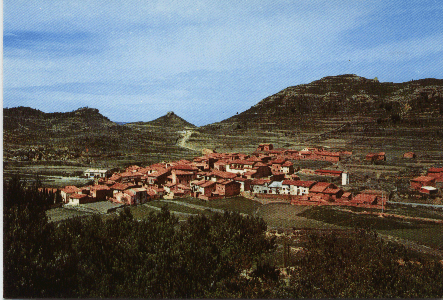
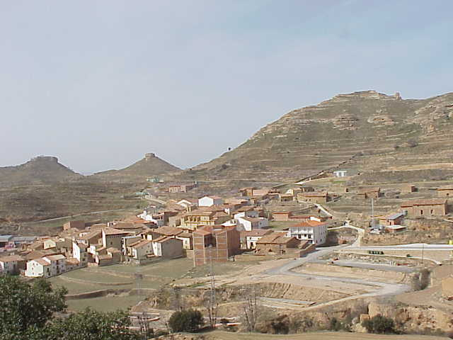

La Villa, ayer y hoy
Olocau del Rey, como otros muchos pueblos ha sufrido un sinfín de cambios. Durante el siglo XX, lentamente y con bastante retraso, ha conocido e incorporado a su vida cotidiana gran parte de las transformaciones sufridas por esta sociedad.


La llegada de la electricidad en los 50, junto con la distribución del agua potable a las viviendas en los años 70, hizo que sus gentes, cambiaran absolutamente su forma de vivir, representando un importantísimo salto en la historia. Asimismo la llegada de los vehículos a motor y la mejora de las vías de comunicación , dio una autonomía y un acortamiento en las distancias, haciendo que sus gentes conocieran otras formas de vivir, producir, etc. No cabe duda que por último, la introducción en las viviendas de modernos aparatos como televisión, teléfono, frigoríficos, lavadoras, etc, a contribuido a mejorar la calidad de vida de sus habitantes, equiparándolos a los de cualquier otro sitio. Sin lugar a dudas, el vivir en una zona rural, alejada de los grandes centros urbanos, representa multitud de inconvenientes; así pues no poseen un centro médico cercano y el médico existente en la zona se comparte con otros pueblos.
Una gran parte de su población vive en las masías. Estas, han representado unos núcleos de población autónoma y casi autosuficiente; hace bien poco se diferenciaban enormemente de la vida en el pueblo. Hasta mitad del siglo XX, en muchas de ellas, vivían varias familias dedicadas a la agricultura y la ganadería. En la actualidad, la mayoría de masías disponen de agua y electricidad, gracias a diversas ayudas estatales, (Olocau del Rey fue pionero en los años 80, con la incorporación la electrificación rural por medio de placas solares). En la década de los años 90, recibieron el suministro de agua para la producción ganadera asó como la incorporación a la red eléctrica. En cuanto a la agricultura, su producción siempre a sido bastante pobre, pues no existen grandes extensiones y las condiciones climatológicas no suelen acompañar. La incorporación de tractores, así como el masivo abonado con excrementos procedentes de la producción ganadera ha hecho que aumenten las cosechas, pero al mismo tiempo el descenso de precios y el minifundio, no propicia el poder vivir de su rendimiento.
Así pues sus habitantes en edad laboral, se ven obligados a compaginar sus tareas agrarias con las ganaderas y en muchos casos con el trabajo por cuenta ajena y en el peor de los casos a emigrar hacia otras ciudades
Al mismo tiempo, su población ha disminuido de una forma excesivamente preocupante, y se ha producido un notabilísimo envejecimiento de sus gentes. La pirámide de edades se asemeja a una peonza.
La industria es inexistente, no obstante, existe un taller (antes la herrería) perteneciente a la familia Gazulla, que se ha adaptado perfectamente a las nuevas producciones y además de dar trabajo a varias familias, da servicios de fontanería, electricidad, fabricación de balsas metálicas, hierro en la construcción y mecánica de vehículos. También existen varios albañiles y una cooperativa de producción de piensos. El comercio local, hasta hace poco estaba atendido por D. José Castell Eixarch, que junto con su esposa regentaban, el estanco, la tienda, en definitiva el lugar donde se podía encontrar de casi todo. La jubilación ha hecho desaparecer este simpático y encantador lugar y ha dado paso a un pequeño, pero moderno supermercado, en el que estoy seguro, también se podrá encontrar de casi todo.
Hasta hace unas décadas existía una alfarería, la cual producía cantaros y otros objetos cerámicos. No hace mucho, se organizó un curso de alfarería, esperemos que pronto podamos ver su producción. Anteriormente existieron varios telares artesanales que producían mantas y otros paños de lana.
También existe un mesón del Rey, que es sin género de dudas el centro del pueblo, donde la gente hace sus partidas de cartas, discuten sus politiqueos, se cierran y pactan grandes y pequeños negocios, y lo que también es muy importante, se ven los partidos de fútbol a través de su antena parabólica. En su restaurante se reponen fuerzas y también se celebran los más importantes actos sociales del pueblo, además el viajero puede encontrar reposo en las habitaciones de que dispone.
Sus mayores, gozan de una apacible vida, sobre todo muy tranquila, pasear mucho, por recomendación del médico que hay actualmente, y viendo pasar al que va y viene, que la verdad no son muchos; pero eso sí, se caracterizan por ser gente amable y de fácil conversación, dispuesta a charlar con el primero que se acerque, dar todas las explicaciones precisas para llegar a cualquier parte e incluso si es preciso acompañar y buscar a quien haga falta. Tienen una asociación de jubilados muy activa, y son continuos los viajes y comidas que ellos mismos se organizan, lo cierto es que después de toda una vida de trabajo, se lo tienen bien ganado.